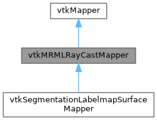
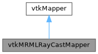

|
Slicer 5.13
Slicer is a multi-platform, free and open source software package for visualization and medical image computing
|
Loading...
Searching...
No Matches
|
Slicer 5.13
Slicer is a multi-platform, free and open source software package for visualization and medical image computing
|
Base class of mappers that render surfaces without geometry that a cell picker could intersect. More...
#include <Libs/MRML/DisplayableManager/vtkMRMLRayCastMapper.h>


Public Member Functions | |
| virtual bool | IntersectWithRay (const double p1[3], const double p2[3], double t1, double t2, double &t, double position[3], double normal[3])=0 |
| void | PrintSelf (ostream &os, vtkIndent indent) override |
| vtkAbstractTypeMacro (vtkMRMLRayCastMapper, vtkMapper) | |
Protected Member Functions | |
| vtkMRMLRayCastMapper ()=default | |
| ~vtkMRMLRayCastMapper () override=default | |
Base class of mappers that render surfaces without geometry that a cell picker could intersect.
Such mappers (for example surfaces that are ray cast on the GPU) implement IntersectWithRay, so that vtkMRMLAccuratePicker can pick them: the picker asks the mapper where the pick ray hits the surface instead of intersecting the cells of the input data set.
Definition at line 32 of file vtkMRMLRayCastMapper.h.
|
protecteddefault |
|
overrideprotecteddefault |
|
pure virtual |
Intersect a ray with the rendered surface. The ray is given in the model coordinates of the prop (the coordinate system of the input of the mapper), from p1 to p2; intersections are accepted between parametric coordinates t1 and t2 (0 at p1, 1 at p2).
| t | Parametric coordinate of the first intersection along the ray |
| position | Position of the first intersection, in model coordinates |
| normal | Surface normal at the intersection, in model coordinates |
Implemented in vtkSegmentationLabelmapSurfaceMapper.
|
override |
| vtkMRMLRayCastMapper::vtkAbstractTypeMacro | ( | vtkMRMLRayCastMapper | , |
| vtkMapper | ) |